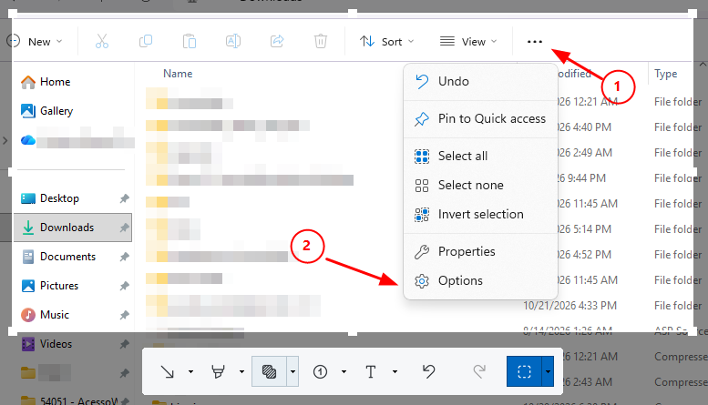
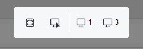
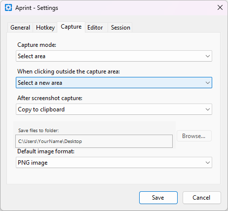

Screen capture
Start a capture with a global shortcut or from the system tray icon. Choose all monitors, the screen under the cursor, or a rectangular region. During selection, use the toolbar to switch between available screens. Configure what happens when clicking outside the region, the action after capture, the destination folder, and the default image format.


